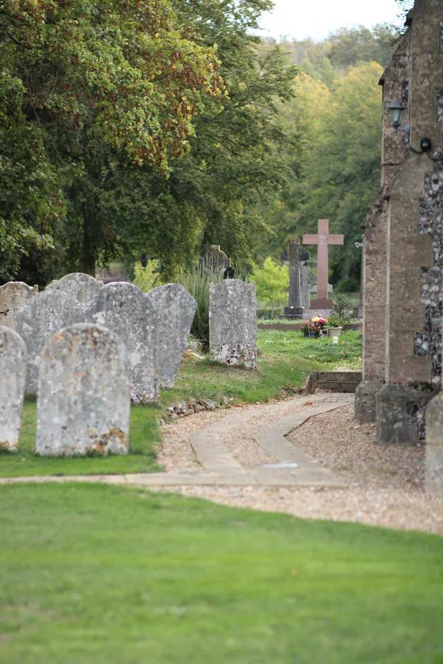

Here when you need us
The parish is here to listen.
In times of loss
Remembrance,
thanksgiving and comfort
If someone has died, we are sorry. The parish is here to listen and to help you ask about a funeral or memorial service.
Talk to us about a funeralThe parish is here to listen.
Ask about the options for your circumstances.
Enquiries for a service at St Michael and All Angels.
Time to remember, give thanks and seek comfort.

A time to remember
A funeral is a time to remember someone who has died, to give thanks for their life and to seek comfort. You may contact the parish or speak with your funeral director about arranging a service at St Michael and All Angels.
Arranging a service ↓Planning a funeral or memorial
The parish can talk with you about a funeral or memorial service and the options for your circumstances. Arrangements, availability and any interment of ashes should be discussed directly with the parish; no particular service or arrangement is assumed here.
You may contact us directly, or speak with your funeral director.
Talk with the parish about a funeral or memorial service and the options.
Discuss arrangements, availability and any interment of ashes directly with the parish.

In the heart of our parish
St Michael and All Angels, Mickleham.
For support, the parish’s prayer and pastoral care pages offer a place to begin.
Prayer and pastoral care →Useful information
The parish asks that floral foam is not used and encourages seasonal, local flowers and foliage. See the shared sustainable flowers guidance for more information.
Read the sustainable flowers guidance (DOCX) ↗Sustainable flowers guidance →The Church of England’s national guidance provides general information about arranging a funeral, what happens at a Church of England funeral and bereavement support. The parish remains your local point of contact.
Read Church of England funeral guidance ↗We are here for you
If someone has died, we are sorry. The parish is here to listen and to help you ask about a funeral or memorial service.
Contact the parish